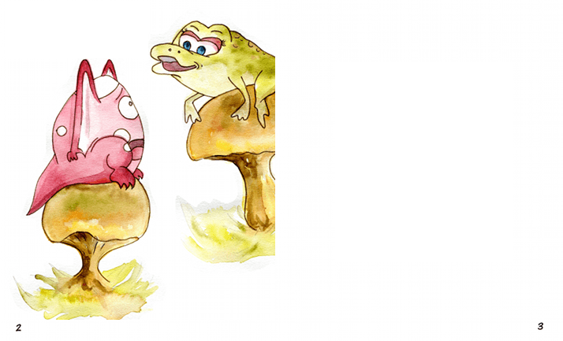
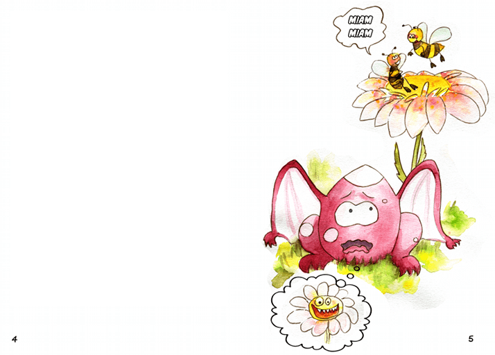
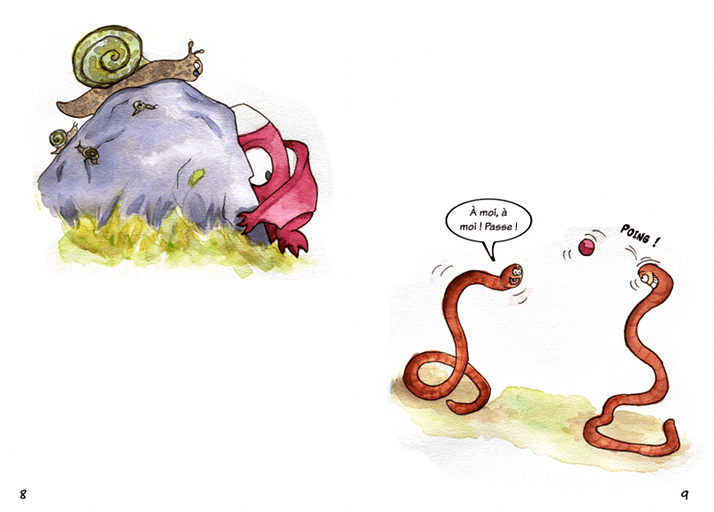
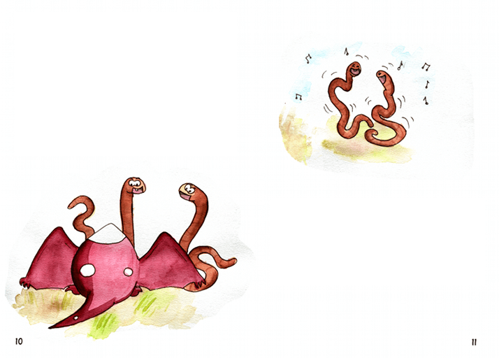
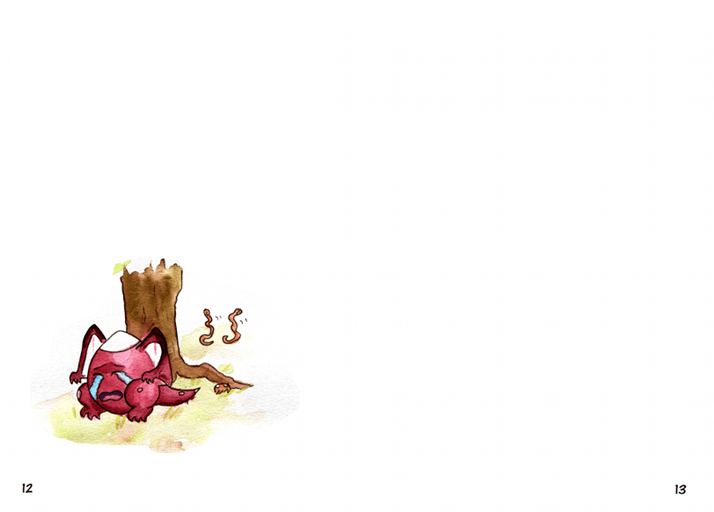

Livre illustré pour enfant – Hictic & Trafe
Voici les planches terminées de l’histoire. Chaque image contient une double-page (02–03, 04–05, etc.). Clique pour les voir en grand, puis utilise les flèches ← → pour passer à la suite.











Astuce : sur ordinateur, tu peux fermer l’image avec la touche Échap, et naviguer avec ← et →.